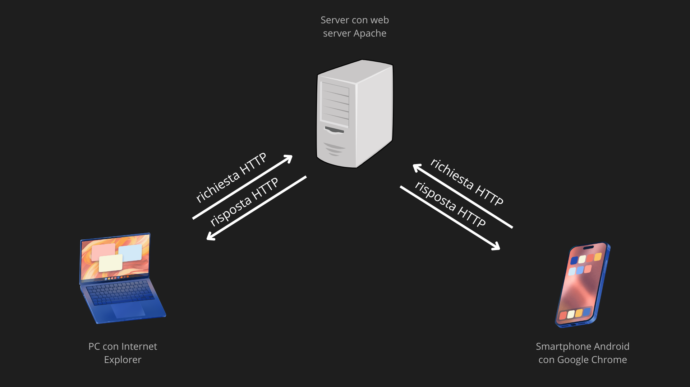
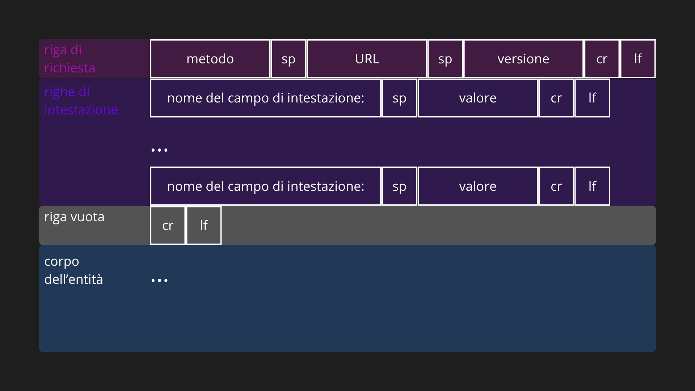
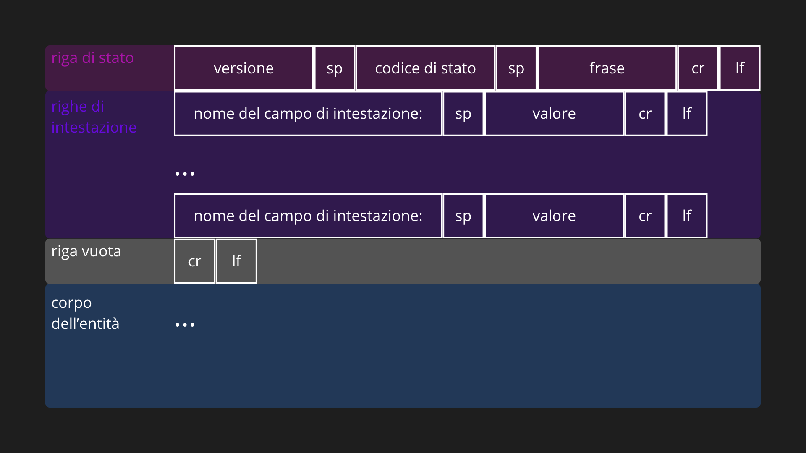
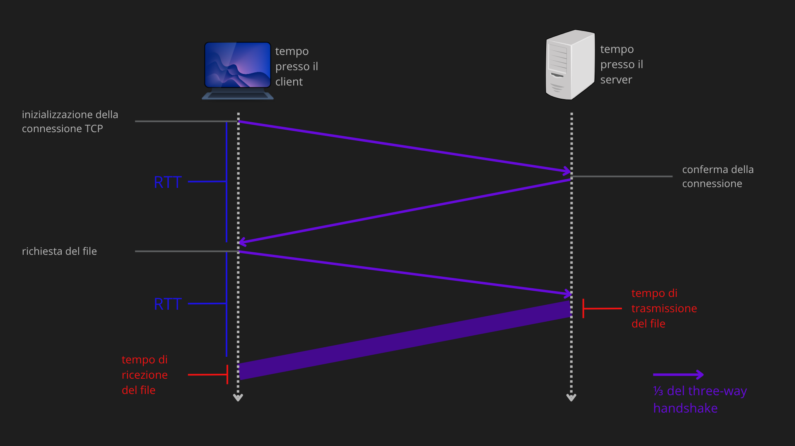
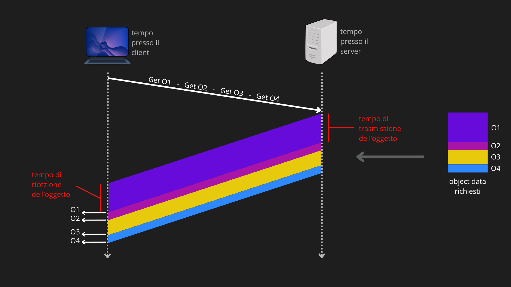
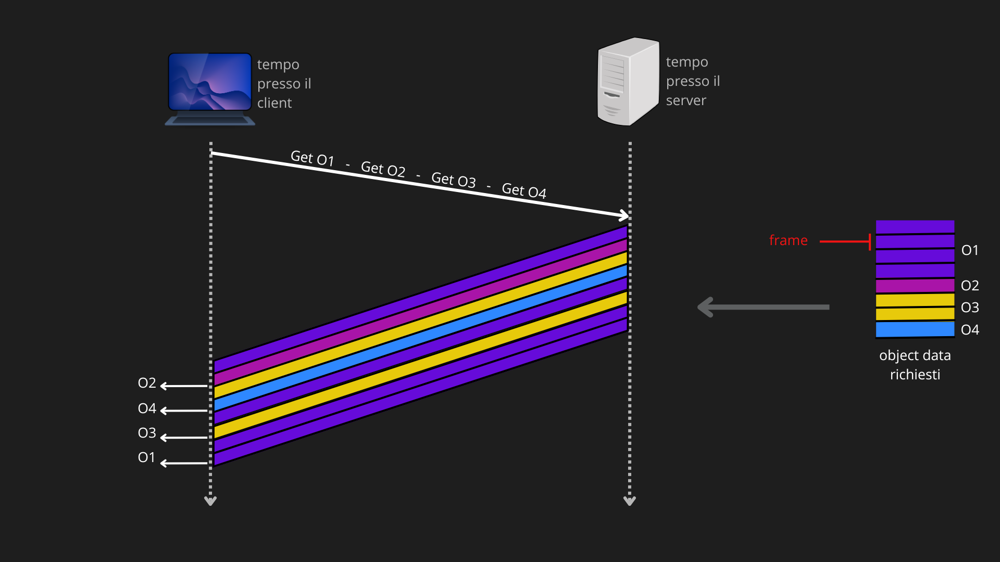
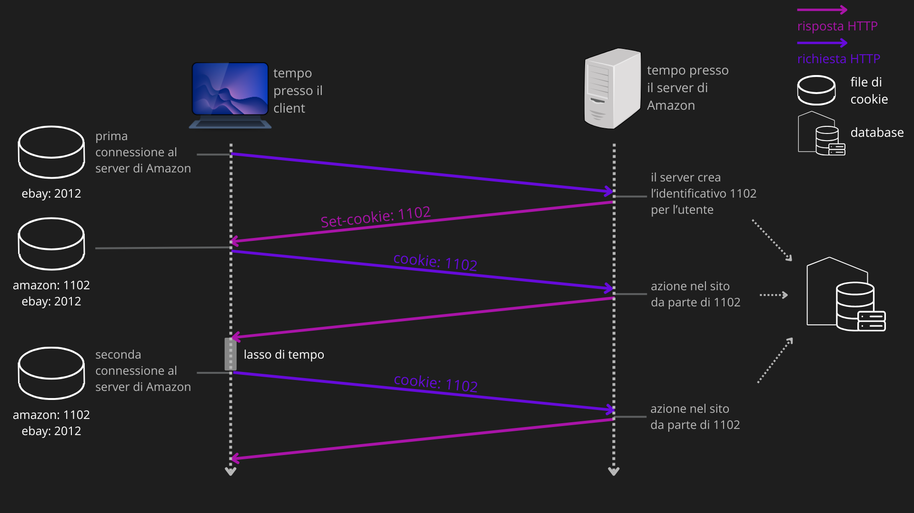
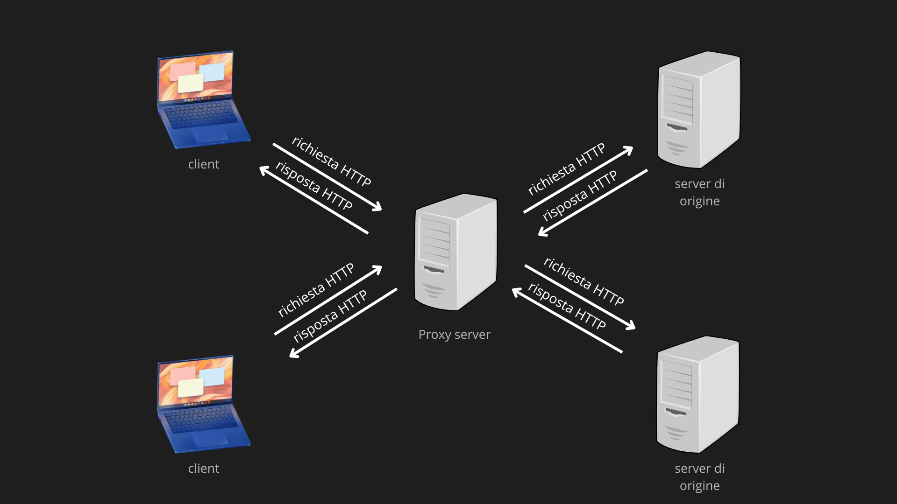
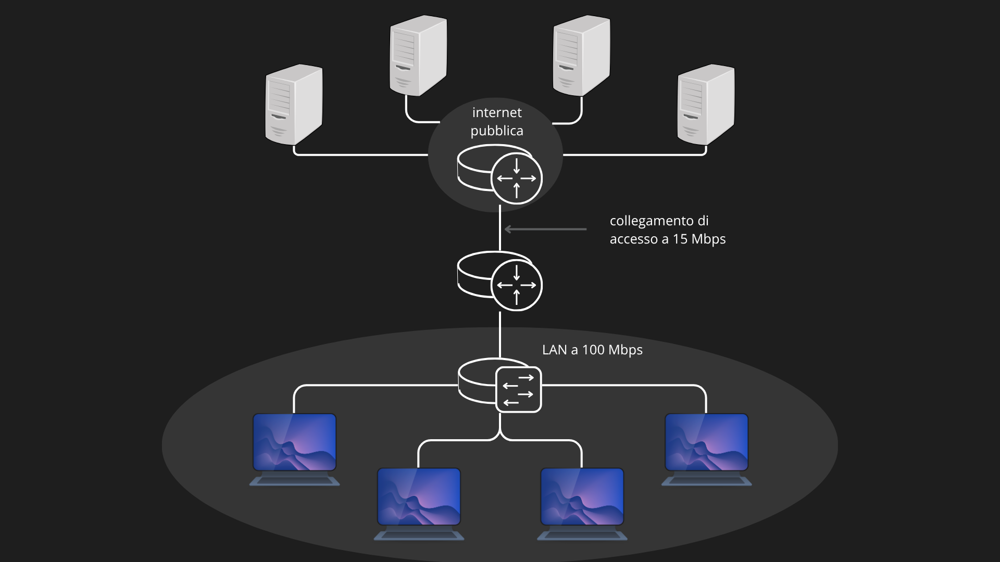
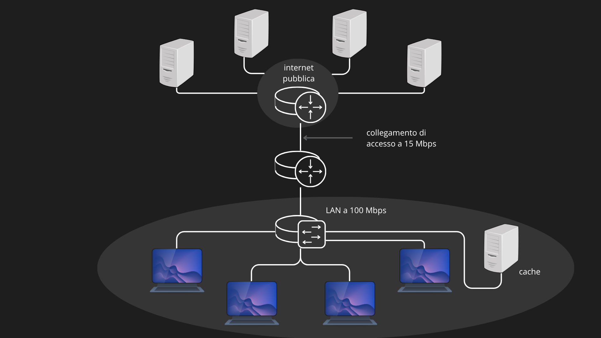

Il Web è un’applicazione di rete di tipo client-server, distribuita su scala globale, che utilizza l’infrastruttura di Internet per consentire il reperimento e la fruizione di contenuti ipertestuali e multimediali (risorse), identificati univocamente tramite URL, trasferiti attraverso il protocollo HTTP e visualizzati dagli utenti mediante un software denominato browser.
Pagina web (o documento): insieme di oggetti. Un oggetto è un file (HTML, JPEG, clip video, ecc.) indirizzabile tramite un URL. La maggior parte delle pagine web consiste di un file HTML principale e diversi oggetti referenziati da esso.
UNIFORM RESOURCE LOCATOR
URL (Uniform Resource Locator): indirizzo di un oggetto sul Web. Composto da due parti:
- il nome dell’host (host name) del server che ospita l’oggetto
- il percorso (path name) dell’oggetto.
Esempio: https://github.com/drizzzyDrake/PublicNotes, dove
github.comè il nome host e/drizzzyDrake/PublicNotesè il percorso.
PROTOCOLLO HTTP
HTTP (HyperText Transfer Protocol) è il protocollo pull a livello di applicazione su cui si basa il Web. È implementato in due programmi, client e server, in esecuzione su sistemi periferici diversi che comunicano scambiandosi messaggi HTTP. Il protocollo definisce sia la struttura dei messaggi sia le modalità con cui client e server si scambiano tali messaggi.

Browser web: software che implementa il lato client di HTTP (es. Firefox, Chrome, Internet Explorer). I termini browser e client sono usati in modo intercambiabile nel contesto Web. Web server: software che implementa il lato server di HTTP e ospita oggetti web indirizzabili tramite URL. Esempi popolari: Apache, Microsoft Internet Information Server.
HTTP e il protocollo di trasporto TCP
HTTP utilizza TCP (e non UDP) come protocollo di trasporto. Il client HTTP inizia per prima cosa una connessione TCP con il server. Una volta stabilita la connessione, i processi client e server comunicano attraverso le proprie socket, che rappresentano l’interfaccia tra un processo e la sua connessione TCP. Un vantaggio fondamentale di questa scelta architetturale è che HTTP non deve preoccuparsi dei dati smarriti o del recupero degli errori: questi sono compiti di TCP e dei protocolli di livello inferiore.
HTTP come protocollo senza stato (stateless)
Un aspetto cruciale di HTTP è che il server invia i file richiesti ai client senza memorizzare alcuna informazione di stato a proposito del client. In caso di una nuova richiesta dello stesso oggetto da parte dello stesso client, il server procederà nuovamente all’invio come se fosse la prima volta. Per questa ragione HTTP è classificato come **protocollo senza memoria di stato (stateless protocol).
Formato dei messaggi HTTP
Le specifiche HTTP (RFC 1945, RFC 2616, RFC 7540) definiscono due tipi di messaggi: messaggi di richiesta e messaggi di risposta. Tutti i messaggi sono scritti in testo ASCII, leggibili dall’utente.
Messaggio di richiesta HTTP
Un messaggio di richiesta HTTP è composto da:

Il carattere cr : in ASCII è il valore
13(\r), riporta il cursore all’inizio della riga (carriage return). Il carattere lf : in ASCII è il valore10(\n), sposta il cursore sulla riga successiva (line feed). In HTTP, la sequenza cr lf (\r\n) indica la fine di ogni riga. L’ultima riga è seguita da una coppia di caratteri di ritorno a capo e nuova linea aggiuntivi (solo per alcuni metodi dopo c’è il corpo dell’entità). Il carattere sp : in ASCII è il valore32per lo spazio (space).
Principali metodi HTTP:
- GET: utilizzato per richiedere una risorsa. I dati sono visibili nell’URL dopo il carattere
?(es: www.mysite.com/search?user=myuser). Il corpo del messaggio è vuoto. - POST: utilizzato per inviare dati al server (es. form). I dati sono inseriti nel corpo del messaggio, permettendo l’invio di grandi quantità di informazioni non visibili nell’URL.
- HEAD: identico a GET, ma il server restituisce solo gli header di risposta senza il corpo. Utile per verificare l’esistenza di una risorsa o metadati senza scaricarla.
- PUT: utilizzato per creare o sostituire completamente una risorsa a un URL specifico. È un metodo fondamentale nelle moderne architetture API.
- DELETE: utilizzato per richiedere la cancellazione di una risorsa specifica sul server.
- PATCH: utilizzato per apportare modifiche parziali a una risorsa esistente, senza dover inviare l’intero oggetto (come invece richiesto da PUT).
Principali righe di intestazione nella richiesta:
- Host: specifica l’host su cui risiede l’oggetto. Necessario per le cache dei proxy.
- Connection: close: comunica al server di chiudere la connessione TCP dopo l’invio dell’oggetto (connessione non persistente).
- User-agent: specifica il tipo di browser che effettua la richiesta (es. Mozilla/5.0). Consente al server di inviare versioni diverse dello stesso oggetto per browser diversi.
- Accept-language: indica la lingua preferita dall’utente per la risposta.
Esempio di messaggio di richiesta:
Example
GET
/drizzzyDrake/PublicNotes/home.indexHTTP/1.1 request line Host:github.comheader line Connection: close header line User-agent: Mozilla/5.0 header line Accept-language: it header line empty line
N.B. Il metodo GET non ha il body (corpo dell’entità).
Messaggio di risposta HTTP
Un messaggio di risposta HTTP è composto da:

Principali codici di stato (e frasi) HTTP:
- 200 OK: la richiesta ha avuto successo e in risposta si invia l’informazione richiesta.
- 301 Moved Permanently: l’oggetto richiesto è stato trasferito permanentemente, il nuovo URL è specificato nell’intestazione Location. Il client recupererà automaticamente il nuovo URL.
- 304 Not Modified: usato in risposta a un GET condizionale: l’oggetto non è stato modificato, il client può usare la copia in cache.
- 400 Bad Request: codice di errore generico, la richiesta non è stata compresa dal server.
- 404 Not Found: il documento richiesto non esiste sul server.
- 505 HTTP Version Not Supported: il server non supporta la versione del protocollo HTTP richiesta.
Tip
I codici di status si dividono in 5 categorie:
- 1xx : indicano che la risposta ricevuta contiene solamente informazioni
- 2xx : indicano che la richiesta effettuata è andata a buon fine
- 3xx : indicano che è stato effettuato un reindirizzamento a seguito della richiesta effettuata
- 4xx : indicano un errore nella richiesta del client
- 5xx : indicano un errore per cui il server non è riuscito a completare la richiesta
Principali righe di intestazione nella risposta:
- Connection: close: comunica al client che il server chiuderà la connessione TCP dopo l’invio del messaggio (connessione non persistente).
- Date: indica l’ora e la data di creazione e invio della risposta HTTP da parte del server (non la data di creazione/modifica dell’oggetto).
- Server: indica il tipo di web server che ha generato il messaggio (analogo a User-agent nella richiesta).
- Last-Modified: indica l’istante in cui l’oggetto è stato creato o modificato per l’ultima volta. Fondamentale per la gestione della cache.
- Content-Length: il numero di byte dell’oggetto inviato.
- Content-Type: indica il tipo dell’oggetto nel corpo del messaggio (es. text/html). Il tipo è identificato ufficialmente dall’intestazione e non dall’estensione del file.
Esempio di messaggio di risposta:
Example
HTTP/1.1 200 OK status line Connection: close header line Date: Sat, 20 Dec 2008 15:44:04 GMT header line Server: Apache/2.2.3 (CentOS) header line Last-Modified: Thu, 11 Feb 2005 15:11:03 GMT header line Content-Length: 1811 header line Content-Type: text/html header line empty line (data data data data data …) body
PERSISTENZA DELLE CONNESSIONI
Quando l’interazione client-server avviene su TCP, gli sviluppatori devono scegliere se inviare ciascuna coppia richiesta/risposta su una connessione TCP separata oppure sulla stessa connessione TCP, questa scelta cambia drasticamente l’efficienza di una connessione.
Round-Trip Time (RTT) e tempo di risposta:
Il RTT (Round-Trip Time): è il tempo impiegato da un piccolo pacchetto per viaggiare dal client al server e tornare al client. Include i ritardi di propagazione, di accodamento nei router e nei commutatori intermedi, nonché di elaborazione del pacchetto.

Calcolo approssimato del tempo necessario per richiedere e ricevere un file HTML (three-way handshake + trasmissione del file).
Connessioni non persistenti
Nelle connessioni non persistenti (default HTTP/1.0) ogni oggetto viene trasferito su una connessione TCP separata, che viene chiusa dopo l’invio dell’oggetto. Quindi ogni connessione trasporta esattamente un messaggio di richiesta e un messaggio di risposta.
Example
Seguiamo passo dopo passo il trasferimento di una pagina web dal server al client nel caso di connessioni non persistenti.
Supponiamo che la pagina consista di un file HTML principale e di 10 immagini JPEG, e che tutti gli 11 oggetti risiedano sullo stesso server. Ipotizziamo che l’URL del file HTML principale sia: http://github.com/drizzzyDrake/PublicNotes/home.index
- Il processo client HTTP, attraverso un three-way handshake, inizializza una connessione TCP con il server
github.comsulla porta 80 (la porta di default per HTTP). Associate alla connessione TCP ci saranno una socket per il client e una per il server.- Il client HTTP, tramite la propria socket, invia al server un messaggio di richiesta HTTP che include il percorso
/drizzzyDrake/PublicNotes/home.index.- Il processo server HTTP riceve il messaggio di richiesta attraverso la propria socket associata alla connessione, recupera l’oggetto
/drizzzyDrake/PublicNotes/home.indexdalla memoria (centrale o di massa), lo incapsula in un messaggio di risposta HTTP che viene inviato al client attraverso la socket.- Il processo server HTTP comunica a TCP di chiudere la connessione. Questo, però, non termina la connessione finché non sia certo che il client abbia ricevuto integro il messaggio di risposta.
- Il client HTTP riceve il messaggio di risposta. La connessione TCP termina. Il messaggio indica che l’oggetto incapsulato è un file HTML. Il client estrae il file dal messaggio di risposta, esamina il file HTML e trova i riferimenti ai 10 oggetti JPEG.
- Vengono quindi ripetuti i primi quattro passi per ciascuno degli oggetti JPEG referenziati. Pertanto, in questo esempio, quando l’utente richiede una pagina web, vengono generate 11 connessioni TCP.
Calcolo degli RTT totali:
TOTRTT = 2 RTT per il file HTML + (10 2 RTT per le immagini) = 22 RTT
Connessioni persistenti
Nelle connessioni persistenti il server lascia la connessione TCP aperta dopo l’invio di una risposta, consentendo a richieste e risposte successive di essere trasmesse sulla stessa connessione senza dover ripetere il three-way handshake per ogni oggetto. HTTP/1.1, HTTP/2 e HTTP/3 utilizzano tutti connessioni persistenti, distinguendosi per il modo in cui gestiscono le richieste al loro interno.
Head-of-Line Blocking:
Il principale limite delle connessioni persistenti è il head-of-line blocking (HOL blocking): il fenomeno per cui un oggetto in attesa di trasmissione viene bloccato da un oggetto che lo precede. Si manifesta a due livelli distinti:
- a livello applicativo: con HTTP/1.1 il client deve attendere la risposta completa a una richiesta prima di poterne inviare un’altra. Un oggetto di grandi dimensioni blocca quindi tutti quelli che lo seguono. HTTP/2 risolve questo problema tramite il multiplexing.
- a livello di trasporto: TCP garantisce la consegna in ordine di tutti i byte: se un segmento viene perso, tutti i dati successivi, anche quelli già ricevuti correttamente, vengono trattenuti in attesa della ritrasmissione. In HTTP/2 questo blocca tutti gli stream contemporaneamente, vanificando parzialmente i benefici del multiplexing. HTTP/3 risolve questo problema sostituendo TCP con QUIC, che gestisce ogni stream in modo indipendente.
Connessioni HTTP/1.1
Nelle HTTP/1.1 il server lascia la connessione TCP aperta dopo l’invio di una risposta. Le richieste e le risposte successive tra gli stessi client e server possono quindi essere trasmesse sulla stessa connessione, anche per più pagine web. Il server HTTP chiude la connessione quando essa rimane inattiva per un dato lasso di tempo (configurabile).

Il limite di HTTP/1.1 è la sequenzialità: il client deve attendere la risposta completa a una richiesta prima di poterne inviare un’altra, causando HOL blocking a livello applicativo.
Example
Seguiamo passo dopo passo il trasferimento di una pagina web dal server al client nel caso di connessioni persistenti.
Supponiamo che la pagina consista di un file HTML principale e di 10 immagini JPEG, e che tutti gli 11 oggetti risiedano sullo stesso server. Ipotizziamo che l’URL del file HTML principale sia: http://github.com/drizzzyDrake/PublicNotes/home.index
- I primi 3 punti avvengono allo stesso modo del caso con connessioni non persistenti.
- A questo punto Il processo server HTTP NON comunica a TCP di chiudere la connessione. Il client riceve l’HTML, lo esamina e trova i riferimenti alle 10 immagini JPEG.
- Il client non ha bisogno di riaprire una connessione TCP. Invia le richieste per le 10 immagini direttamente attraverso la socket già aperta.
- Il client invia le richieste per tutte e 10 le immagini una dopo l’altra e Il server risponde inviando gli oggetti in sequenza.
- Dopo che tutti gli oggetti sono stati trasferiti, la connessione viene chiusa dal server solo dopo un periodo di inattività (timeout).
Mentre nel caso non persistente si paga l’handshake TCP per ogni singolo file, qui lo si paga solo all’inizio.
Calcolo degli RTT totali:
TOTRTT = 2 RTT per il file HTML + (10 1 RTT per le immagini ) = 12 RTT
Connessioni HTTP/2
HTTP/2 (RFC 7540) introduce un binary framing layer: i messaggi vengono frammentati in unità binarie dette frame, consentendo il multiplexing. Frame appartenenti a oggetti diversi possono essere intercalati sulla stessa connessione TCP, ciascuno identificato da uno Stream ID. Il client può assegnare una priorità ai singoli stream.

Questo elimina il HOL blocking a livello applicativo di HTTP/1.1, ma rimane il HOL blocking a livello di trasporto: la perdita di un singolo segmento TCP blocca comunque l’intera connessione. HTTP/2 introduce inoltre il Server Push: il server può inviare risorse al client prima che quest’ultimo le richieda esplicitamente.
Example
Supponiamo che la pagina consista di un file HTML principale e di 10 immagini JPEG, e che tutti gli 11 oggetti risiedano sullo stesso server. Ipotizziamo che l’URL del file HTML principale sia: http://github.com/drizzzyDrake/PublicNotes/home.index
- Il processo client HTTP inizializza una connessione TCP con il server
github.com. Viene eseguito il three-way handshake, durante il quale client e server negoziano anche l’utilizzo di HTTP/2 come protocollo.- Il client invia la richiesta per il file HTML principale.
- Il server recupera l’oggetto e lo restituisce al client. La connessione TCP rimane aperta.
- Il client riceve l’HTML, lo esamina e individua i riferimenti alle 10 immagini JPEG.
- Il client invia le richieste per tutte e 10 le immagini simultaneamente, senza attendere risposta alcuna. Ogni richiesta viaggia su uno stream logico indipendente all’interno della stessa connessione TCP.
- Il server risponde inviando i frame delle diverse immagini in modo intercalato sulla stessa connessione, rispettando le eventuali priorità indicate dal client. Il client ri-assembla ciascun oggetto separatamente.
- La connessione viene chiusa dal server dopo un periodo di inattività (timeout).
Calcolo degli RTT totali:
TOTRTT = 2 RTT per il file HTML + 1 RTT per le immagini (in parallelo sugli stream) = 3 RTT
Connessioni HTTP/3
HTTP/3 (RFC 9114, 2022) sostituisce TCP con QUIC (Quick UDP Internet Connections), un protocollo di trasporto costruito sopra UDP, eliminando il HOL blocking a livello di trasporto residuo in HTTP/2. QUIC gestisce ogni stream in modo indipendente: la perdita di un pacchetto appartenente a uno stream non blocca gli altri.
COOKIE: INTERAZIONE UTENTE-SERVER
Dato che HTTP è un protocollo senza stato, per consentire ai web server di tenere traccia degli utenti si utilizza la tecnologia dei cookie (definita in RFC 6265). I cookie consentono ai server di autenticare gli utenti e di fornire contenuti personalizzati.
Componenti della tecnologia cookie
La tecnologia dei cookie si basa su quattro componenti:
- Una riga di intestazione nel messaggio di risposta HTTP (Set-cookie: numero identificativo).
- Una riga di intestazione nel messaggio di richiesta HTTP (Cookie: numero identificativo).
- Un file di cookie mantenuto sul sistema dell’utente e gestito dal browser che associa il nome dei vari host dei server dei siti visitati con i rispettivi numeri identificativi di cookie (host name: numero identificativo).
- Un database sul sito del server, che associa l’identificativo cookie ai dati dell’utente.
Funzionamento dei cookie
Alla prima visita di un utente a un sito, il server crea un identificativo unico e una voce nel proprio database. La risposta HTTP include l’intestazione Set-cookie: id che comunica al browser di memorizzare tale identificativo nel file dei cookie dell’utente. Nelle visite successive, ogni richiesta HTTP include automaticamente l’intestazione Cookie: id, permettendo al server di identificare e riconoscere l’utente. I cookie possono essere usati per creare un livello di sessione utente al di sopra di HTTP (che è stateless), per implementare funzionalità come il carrello della spesa virtuale o il riconoscimento automatico dell’utente (one-click shopping).

N.B. I cookie sono fonte di controversie in quanto possono essere considerati una violazione della privacy: usando una combinazione di cookie e informazioni fornite dall’utente, un sito web può raccogliere molte informazioni sulle abitudini di navigazione e potenzialmente venderle a terze parti.
WEB CACHING (PROXY SERVER)
Una Web cache (o proxy server) è un’entità di rete che soddisfa richieste HTTP al posto del web server effettivo. Il proxy dispone di una propria memoria su disco (cache) in cui conserva copie di oggetti recentemente richiesti. Il proxy è un intermediario: è contemporaneamente server (verso il client) e client (verso il server di origine).
Funzionamento del proxy

Il browser dell’utente viene configurato in modo che tutte le richieste HTTP vengano indirizzate al proxy server. Il funzionamento è il seguente:
- Il browser stabilisce una connessione TCP con il proxy e invia la richiesta HTTP.
- Il proxy controlla se dispone di una copia locale dell’oggetto richiesto.
- Se l’oggetto è in cache (hit), il proxy lo invia direttamente al browser tramite un messaggio di risposta HTTP.
- Se l’oggetto non è in cache (miss), il proxy apre una connessione TCP verso il server di origine, richiede l’oggetto, ne salva una copia locale e la inoltrata al browser.
Vantaggi del web caching
Il web caching si è sviluppato per due ragioni principali:
- Riduzione dei tempi di risposta: il proxy può consegnare rapidamente oggetti frequentemente richiesti sfruttando la connessione ad alta velocità tra client e proxy, senza dover contattare il server di origine.
- Riduzione del traffico sul collegamento di accesso: riduce il carico sul collegamento verso Internet, consentendo risparmi economici ed evitando costosi aggiornamenti di banda.
Esempio:
Example
Consideriamo una rete locale collegata a Internet tramite un link a , con di oggetti da . Inoltre consideriamo il ritardo medio per una richiesta che va dal router di accesso fino al server di origine su Internet e torna indietro, e il ritardo per trasferire l’oggetto da un proxy (o dal router locale) fino al PC dell’utente all’interno della rete locale.
L’intensità di traffico sul collegamento di accesso è dunque (valore critico che genera ritardi dell’ordine dei minuti). Poiché il ritardo di accodamento () nel router di accesso cresce in modo esponenziale. Secondo la teoria delle code, il ritardo totale tende all’infinito (nella pratica, l’utente aspetta minuti e sperimenta perdite di pacchetti).

Example
Installando un proxy con hit rate pari a 0,4 (il 40% delle richieste viene soddisfatto localmente dalla cache), solo il 60% (, miss rate) delle richieste transita sul collegamento di accesso, riducendo l’intensità di traffico ad uno stato stabile ( trascurabile). Infatti Il nuovo tasso di arrivo sul link esterno () diventa: , e la nuova intensità di traffico () diventa: .

Example
Il ritardo medio risultante a questo punto è dato da: (nella pratica l’utente aspetta meno di 2 secondi e NON sperimenta perdite di pacchetti).
GET condizionale
Il web caching introduce un potenziale problema: la copia in cache potrebbe essere obsoleta rispetto all’oggetto sul server di origine. In altre parole, l’oggetto ospitato nel web server potrebbe esser stato modificato rispetto alla copia nel client (sia esso un proxy o un browser). HTTP risolve questo con il meccanismo del GET condizionale. Il GET condizionale è un messaggio di richiesta HTTP che usa il metodo GET e include la riga di intestazione If-modified-since. Permette alla cache di verificare se un oggetto è stato modificato prima di inviarlo nuovamente.
Funzionamento:
Per mostrare il funzionamento del GET condizionale, consideriamo un esempio:
Example
Per prima cosa un proxy invia un messaggio di richiesta a un web server per conto del browser richiedente:
/drizzzyDrake/PublicNotes/home.indexHTTP/1.1 Host:github.comGET
Poi, il web server invia al proxy un messaggio di risposta con l’oggetto richiesto:
Last-Modified: Wed, 9 Sep 2015 09:23:24 Content-Type: image/gif (data data data data data ...)
HTTP/1.1 200 OK Date: Sat, 3 Oct 2015 15:39:29 Server: Apache/1.3.0 (Unix)
Il proxy inoltra l’oggetto al browser richiedente e pone anche l’oggetto nella cache locale. Va sottolineato che la cache memorizza con l’oggetto anche la data di ultima modifica.
Poi, una settimana più tardi, un altro browser richiede lo stesso oggetto attraverso il proxy, e l’oggetto si trova ancora nella cache. Dato che tale oggetto può essere stato modificato nel web server durante la settimana trascorsa, il proxy effettua un controllo di aggiornamento inviando un GET condizionale. Più nello specifico invia:
/drizzzyDrake/PublicNotes/home.indexHTTP/1.1 Host:github.comIf-modified-since: Wed, 9 Sep 2015 09:23:24GET
Si osservi che il valore della riga di intestazione If-modified-since: equivale esattamente al valore della riga di intestazione Last-Modified: inviata dal server una settimana prima. Questo GET condizionale sta comunicando al server di inviare l’oggetto solo se è stato modificato rispetto alla data specificata.
Supponiamo che l’oggetto non sia stato modificato dalle 9:23:24 del 9 settembre 2015. Allora il web server invia un messaggio di risposta al proxy:
Example
HTTP/1.1 304 Not Modified Date: Sat, 10 Oct 2015 15:39:29 Server: Apache/1.3.0 (Unix) (corpo vuoto)
Notiamo che in risposta a un GET condizionale, il web server invia ancora un messaggio di risposta, ma non include l’oggetto richiesto, in quanto ciò implicherebbe solo spreco di banda e incrementerebbe il tempo di risposta percepito dall’utente, in particolare se l’oggetto è grande. La riga di stato 304 Not Modified comunica al proxy che può procedere e inoltrare al browser richiedente la copia dell’oggetto presente in cache.